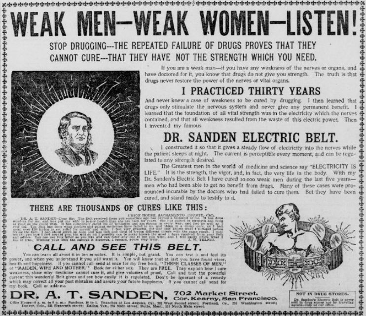
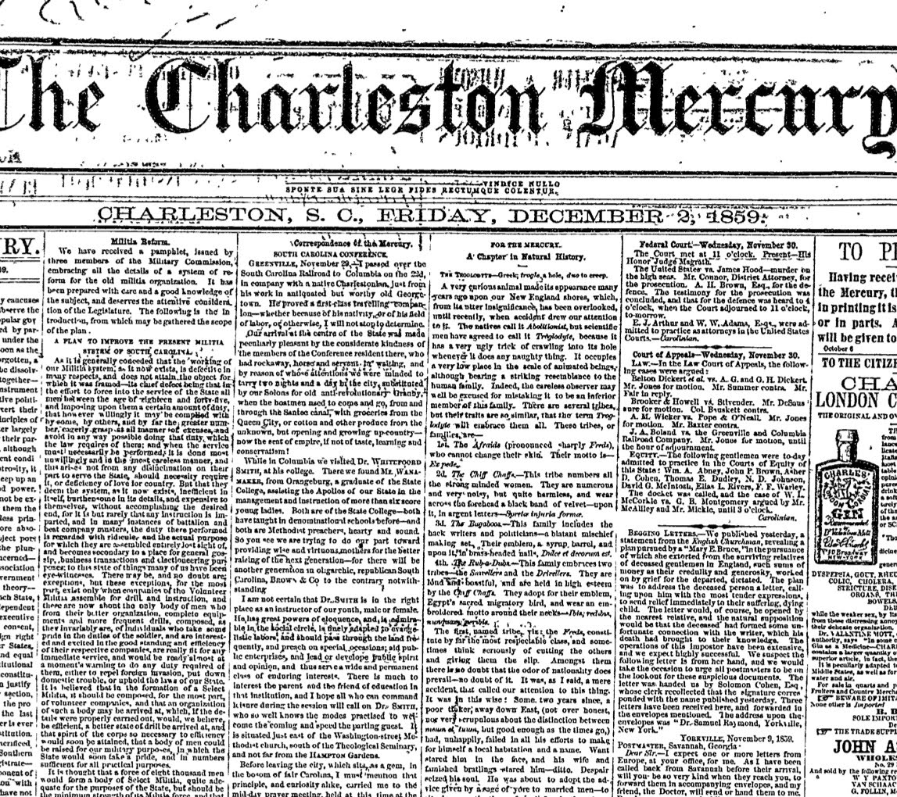

Welcome to The Washing Magazine Documentation!
The main inspiration for this Magazine comes from the coffee-laundries from NYC, where people would read magazines while waiting for their automatic washing machines. These, common in metropolitan cities, would see every kind of people and would mix all clothes with each other. This would also represent how different issues are here held together and mixed, compared... In our fictional history, these would held knowledge about the world and represent an archive for the world's knowledge.
This project is known as LLLL (Leisurely Luscious Literary Lenses).
We want to deploy literary and linguistic tools that allow for an interesting exploration and comparison of articles of similar topics.
- Lens: Side by side comparison of diggerent articles on the same topics. these are repeatble, parametrised and allow for an interesting metadata analysis.
- Literary: Analysis of different articles. Readers can have, at a glance, the general information used in the articles thanks to metadata comparison, to the summary functionality and to the Topic Modelling functionality, which would allow to locate the different information clusters inside the articles.
- Luscious: This page allows for an enriching experience. The metadata is shown in a simple format, connect to the location (the articles scrolls dynamically to the place selected) and highlight the similar ones. One can compare up to 3 articles at the same time, both from a computer and from smaller screens. Metadata are generated dynamically -making the addition of new issues easier and the exploration more pleasant.
- Leisure: When starting the project, we thought: in which kind of situation our magazine would be read? A requirement to enjoy a product like ours is the availability of time to read, explore, understand and compare not just the articles, but the data mined from them. From this we chose a coffee-house-like situation. Another possible concept was revolving around the human eye and the experience of looking around. We combined these ideas and thought: what about watching something that rotates over itself, like the inside of a washing machine?
About the issues, we decided to go with topics that would be talked about in opinion circles and magazines. Thus, we opted for three topics that have polarised the opinions in the public:
- Working from Home, its effects on our lives and its sustainability;
- Space Tourism, ethics related to it and how it could change lives today;
- Language Inclusivity, how binarism affected our perception of language and how can evolve.
For these issues, we opted for metadata that could highlight the differences between their topics, like the people involved, the institutions, dates and so on and so forth. While the articles are manually annotated, the analysis of metadata is dynamic. Information about the topics and which articles are there is kept in a JSON file which is used to link the articles to the page. All metadata use HTML classes, which are used to give unique ID to all instances which are exploited in the href of the numbers. When possible, metadata are linked to respective Wikipedia articles. It is also possible to sort the metadata in alphabetical order and also in order of date for the Date data.
This style is dedicated to American Newspapers from the post-indipendence era, such as the National Intelligencer and Washington Advertiser. This style aims at giving the user the experience of reading a newspaper of the time today, thus the color sepia in the background; also, since photos were not a thing, pictures are given properties that would make them similar to what a drawing over a newspaper would be and are treated as advertisement pictures would be in newspapers at the time. 
The text is justified, as paragraphs would be organised to maximise the space efficiency and write as much as possible while breaking the lines of the newspaper to better readibility.  Here the column break is absent as dividing into columns would make reading the articles more difficult. The fonts used mimick the ones of the National Intelligencer (JMH Legajo, JD Carnival Black and Essays 1743).
This Futuristic style brings us in a distopian future, where humanity is trapped in a continous repetition of the past in the style and content. The government, controlled by the Communist Party of Nostalgia, is interested in keeping the general population into a state of hypnosis, done in not so subtle ways (e.g. the background used in this style). This style aims at establishing the connection with some kind of nostalgia to the 2010s, using a combination of minimalist style website structure and colours, that would make the user both uncomfortable and nostalgic. This style is not supposed to be pleasant; it is supposed to hypnotise.
An important functionality added in the course of time is the empowerment of websites Named Entity Recognition, that allows the user, when hovering entities, to know more about them. In backwards compatibility mode, such with our computers, this has resulted in showing a small icon describing what the element is in the top right of the screen.
Since this website is envisioned in a technocratic society, most font dimensions are dedicated to some constant of the physics or mathematics world.